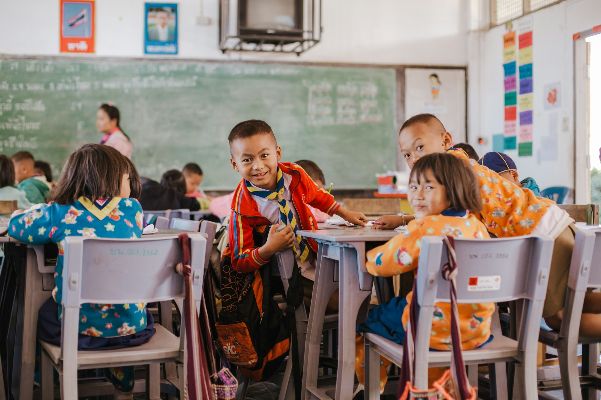

How To Start Helping
Register Yourself
Sign up to join and be part of the good people who love to share
Select Donate
There are many things you can choose to share goodness with
Share Happiness
Sharing happiness with those less and doing more good for others
Change begins with education.
We believe that education is the foundation for a brighter future. Our mission is to create pathways for underserved children and communities, providing them with the resources, support, and encouragement they need to realize their full potential. Through your generosity, we can offer access to quality education, essential supplies, and mentorship programs that empower individuals to shape their own futures and drive positive change. Join us in transforming lives—because when we invest in education, we invest in lasting change for everyone.
Nourishing Lives, Empowering Futures
We are dedicated to making a real difference in the lives of those who need it most. Through initiatives like food donations, educational support, and essential supplies, we strive to bring hope and security to underserved communities. By addressing immediate needs—such as providing meals to fight hunger and resources to support growth—we create a foundation for long-term impact. Together, we can empower individuals and families to build a brighter, more self-sustaining future. Join us in extending a helping hand to bring lasting change.